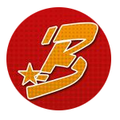

 Volcán Irazú
Volcán Irazú
Volcán Poás
Volcán Turrialba
#PregunTica
 Tipo de Cambio CR
Tipo de Cambio CR
Volcanes CR
Lista de Bots
Esta es la lista de mis bots, espero que los disfruten.
Build your own by forking LittleLink.